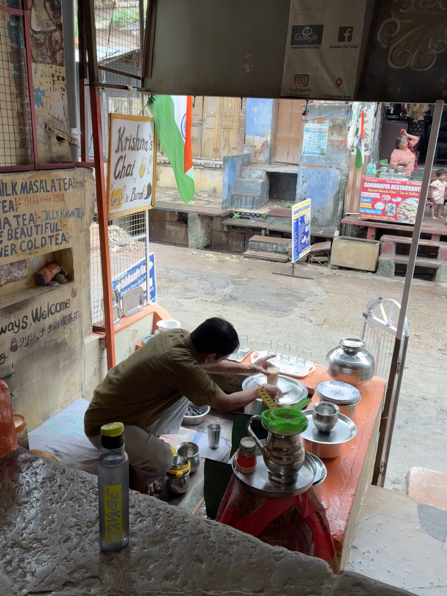
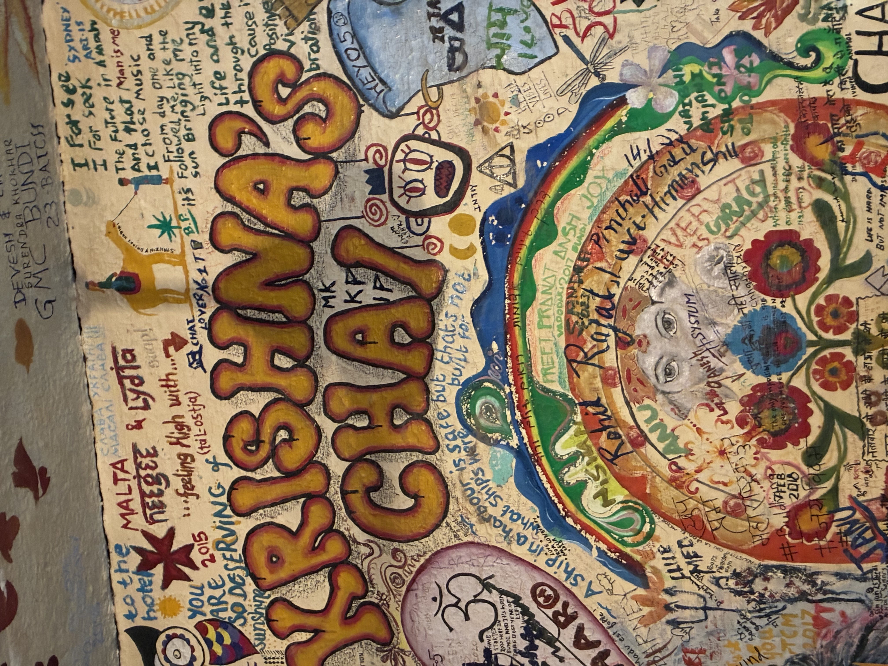

Today's story is from a popular chai wala in a small town in rajasthan called Bundi, near Kota.
Krishna ji has a chai shop about 5 minutes from the Bundi Fort. You’ll find him there with a big smile, and if you don’t, you can just remove your shoes and sit at his shop. When you sit there, you’ll see his number on the board, call him :)
His home is right opposite to the shop. He’ll greet you with a big smile.
He’s an honest guy. He’s honest with his art - making chai, and with his devotion to Shiv Ji, and with his love for bhang. Well - bhaang too is devotion for Shiv ji, I guess. He takes some bhang every night, and also has a magic tea which he sells.
Krishna tells me all he asks from Shiva is to keep him happy, keep him smiling. He doesn’t ask wealth or anything else. He tells me that ‘karam’ which translates to action is what we have to do and money will come. He further doesn’t need much money, only enough to buy him his rotis and sabji.

He recently went on a chaar dham yatra. He hated the chai there, so he didn’t have chai for multiple days until he came to a restaurant, where he said he’d like to make chai and will pay extra for the same. He made some chai there. He had carried his own masala there - which he gathers from multiple places in India.
He never sells. He just mentions if you’d like you can check this out. He made me checkout the postcards. His brother paints them.
He made me check out his dinner - at the end of his menu. His wife cooks the dinner.
He finds it too hot in summer days - so he rests at his house, and if somebody calls him - he comes and brews up a nice fresh cup of hot chai - nothing is premade.
